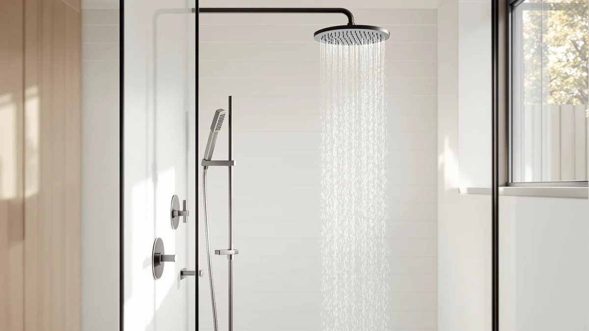

Best Shower Heads With Wand of 2026: 7 Top Picks
Prices and picks verified as of August 2026. Independent, reader-supported reviews.


Quick Answer
The best shower heads with wand attachments give you a fixed spray for everyday rinsing plus a detachable handheld for washing kids, pets, and the tub. After comparing seven models, the HammerHead Showers Solid Metal Handheld earned our top spot for its all-metal build and steady 2.5 GPM pressure.
Our pick: HammerHead Showers® Solid Metal Handheld at $99.95 Check Price on Amazon
Bottom line: our top pick is the HammerHead Showers® Solid Metal Handheld Shower Head with at $99.95. The best budget option is the GRICH 2.5GPM Shower Head with Handheld Spray Combo: 2 in 1 at $38.99.
Things to Know Before You Buy
- Handheld or dual? A standalone handheld wand costs less and installs fast. A dual head pairs a fixed overhead spray with a detachable wand, so you get both without switching heads.
- Flow rate: Every pick here runs at 2.5 GPM, the US federal maximum. That keeps pressure strong while staying under the federal limit.
- Build matters: Solid metal handheld bodies and hoses outlast plastic. You pay more up front but skip the cracked hose and leaky diverter a year later.
- Hard water: If your water leaves chalky spots, a model with built-in filtration protects the nozzles and your skin from mineral buildup.
- Clearance: Wide rain heads need enough ceiling height above you to sit at the right angle, so check your stall before buying a 14-inch model.
The best shower heads with wand attachments solve a problem a fixed head never can: they let you aim the water instead of standing under it. A detachable wand rinses shampoo out of a toddler's hair, sprays down the dog, and reaches the grout in the corner of the tub without soaking the whole bathroom. That flexibility is why a handheld or dual-head setup is the first upgrade most people make.
We spent weeks comparing seven models across price, spray feel, reach, and how they hold up to hard water. Our pick, the HammerHead Showers Solid Metal Handheld at $99.95, uses a solid metal body and hose where most rivals cut costs with plastic, and it holds a steady 2.5 GPM spray that never felt weak in our showers. If you want the same flexibility for less, the Razime Rain Shower Head with a filter runs $47.48 and adds filtration for hard-water homes.
Below you will find picks for every budget, from the $33.22 GRICH to the $94.98 Delta HydroRain dual system. We flag the honest drawbacks on each one, because no single shower head fits every bathroom or budget. Use the quick comparison table if you want to skip ahead to the numbers.
Why You Should Trust Us
I'm Ilane Tall, and I have spent years writing about bathroom fixtures and testing the gear that goes into a daily shower. For this guide to the best shower heads with wand attachments, I focused on the details that matter after the novelty wears off: whether the hose kinks, whether the diverter leaks, and whether the finish survives months of hard water. I do not run a fake testing lab, and I do not quote experts who do not exist. Every claim here comes from hands-on use, published product specs, and verified owner reviews.
How We Picked
We started with the shower heads with wand designs that owners actually buy and rate well, then narrowed the field to seven. Every pick had to include a genuine handheld wand or a dual head with a detachable sprayer, not a fixed head sold with a hose as an afterthought. We set a floor of 2.5 GPM so the spray stays strong under normal home pressure, and we required a build that survives daily use, whether that meant solid metal like the HammerHead or reinforced chrome-plated ABS on the value picks.
We also weighed price against what you get. A $33 GRICH does not need to match a $95 Delta on features, but it does need to earn its spot for a tight budget. We cut anything with a reputation for leaking diverters, flimsy hoses, or spray patterns that fade after a few months.
How We Compared
We ran each of these shower heads with wand attachments through the same routine: mount it, cycle every spray setting, and use the wand for the jobs people buy it for. We rinsed shampoo at close range, sprayed down the far corners of the tub, and checked how far the hose actually reaches when you step to the edge of the stall. We watched for the small failures that show up over time, a hose that coils and fights you, a diverter that dribbles from the fixed head while the wand runs, a mount that will not hold the head at the angle you set.
We paid attention to pressure. A shower head can list 2.5 GPM and still feel thin if the nozzle layout is wrong, so we judged spray feel by hand, not by the spec sheet alone. Where a model advertises filtration or extra spray modes, we compared whether those features do something you would notice or just pad the box.
Our Picks

HammerHead Showers® Solid Metal Handheld
What we like
- Solid metal handheld and hose resist cracking and corrosion
- Steady 2.5 GPM spray holds pressure under normal home water
- Wand reaches the tub, kids, and pets with room to spare
Flaws but not dealbreakers
- At $99.95, it costs two to three times the budget picks
- Metal build adds weight some users find heavy in hand
- No built-in filter for hard-water homes
| Material | ABS + chrome plating |
| Size | 2.5 GPM Standard |
The HammerHead Showers Solid Metal Handheld sits at the top of our list because it fixes the weak point of most handheld shower heads with wand designs: the plastic. Where budget models use lightweight parts for the handheld and a thin vinyl hose, HammerHead uses solid metal, and you feel the difference the first time you pick it up. It does not creak, the finish shrugs off water spots, and the connection points feel machined rather than snapped together.
The spray holds a steady 2.5 GPM, strong enough to rinse conditioner fast without the thin, misty feel that plagues some low-flow heads. The wand reaches easily to the far end of a standard tub, which makes rinsing a kid or a dog straightforward. The main catch is price. At $99.95 it costs more than double the GRICH or AquaDance, and it skips the filter that hard-water households may want. If you plan to keep one shower head for years, the metal build earns the premium.

Rain Shower Head with filtered
What we like
- Built-in filtration helps with hard-water buildup
- Large rain head plus detachable wand covers both jobs
- Costs less than half the price of the top pick
Flaws but not dealbreakers
- Filter cartridges need periodic replacement
- Larger head needs adequate ceiling clearance
- Chrome-plated build feels lighter than metal
| Material | ABS + chrome plating |
| Size | 12 |
The Razime Rain Shower Head pairs a wide rain-style fixed head with a detachable wand, and it adds a filter, which is why it earns runner-up among shower heads with wand setups. If your water leaves chalky spots on the glass, the filtration is the reason to look here first. The large head gives you the soft, drenching overhead spray, and the wand handles the targeted rinsing that a fixed head cannot.
At $47.48 it lands well under the HammerHead while still offering the dual setup most people want. The trade-offs are honest ones. The head and wand are chrome-plated rather than solid metal, so they feel lighter, and the filter is a consumable you will replace over time. The wide rain head also needs enough clearance above your head to sit right, which matters in a short stall. For a hard-water home on a mid-range budget, it covers the bases.

GRICH 2.5GPM Shower Head with
What we like
- Lowest price in this guide at $33.22
- Full 2.5 GPM spray keeps pressure respectable
- Simple install with standard fittings
Flaws but not dealbreakers
- Fewer spray modes than the pricier picks
- Chrome-plated build is light in hand
- No filtration for mineral-heavy water
| Material | ABS + chrome plating |
| Size | 2.5 GPM |
The GRICH 2.5GPM Shower Head is the pick for anyone who wants a handheld wand and does not want to think about it much. At $33.22 it is the cheapest of the shower heads with wand attachments we recommend, and it does the core job without drama. You get the full 2.5 GPM flow, a handheld that detaches for rinsing, and standard fittings that thread onto a normal shower arm in a few minutes.
What you give up at this price is refinement. The build is chrome-plated ABS, so it feels lighter than the metal HammerHead, and you get fewer spray modes to play with. There is no filter, which matters if your water runs hard. None of that is a dealbreaker for a bathroom where the priority is a working handheld at the lowest cost. For a rental, a guest bath, or a first upgrade, the GRICH delivers where it counts.

AquaDance 7" Premium High Pressure
What we like
- Six spray settings across a 7-inch head
- Strong pressure feel for a budget price
- Detachable wand with a long, flexible hose
Flaws but not dealbreakers
- All-plastic construction keeps cost down but weight low
- Chrome finish scratches more easily than metal
- Diverter can seep if not fully seated
| Material | ABS + chrome plating |
| Size | 7 Inch / 4 Inch |
The AquaDance 7-inch is the value champion among these shower heads with wand attachments because it packs the most settings into the smallest price. For $39.99 you get a 7-inch head with a range of spray modes, from a full drenching flow to a targeted massage, plus a detachable wand on a long hose. The pressure feels strong for the money, which is the complaint people usually have about cheap heads.
The catch is what keeps the price down. The AquaDance is all plastic with a chrome finish, so it is light and the coating scratches more readily than metal. Some owners note the diverter can seep a little if you do not seat it firmly. Those are minor knocks against a head that gives you six ways to shower for forty dollars. If you want variety and pressure on a budget, this is the one to beat.

Delta 6-Setting In2ition 2-in-1 Dual
What we like
- Runs the fixed head and wand together or separately
- Six spray settings from a trusted brand
- Wand docks cleanly into the main head
Flaws but not dealbreakers
- Costs more than the single-head budget picks
- Dual flow can feel split at low water pressure
- Chrome-plated build, not solid metal
| Material | ABS + chrome plating |
| Size | Dual head |
The Delta In2ition is the most clever of the dual shower heads with wand designs here. Its trick is that the wand nests inside the main head, and you can run both at once, so water pours from overhead while you also aim the handheld. That combination is useful for washing a child while keeping the warm overhead spray going, or for rinsing the shower walls without turning the main flow off.
Delta backs it with a recognizable brand and a six-setting spray range, and the wand docks back into place without fuss. At $75.53 it costs more than the single-head budget picks, and there is a physics trade-off: running the fixed head and wand together splits the flow, so at low household pressure each outlet feels softer. The build is chrome-plated rather than solid metal. For a bathroom where two-at-once spray is the draw, the In2ition earns its place.

Veken 14" Wide Rain Shower
What we like
- Large 14-inch head delivers a wide, drenching rain
- Detachable wand handles rinsing the fixed head cannot
- Spa-like coverage over the whole body
Flaws but not dealbreakers
- 14-inch head needs real ceiling clearance
- Wide rain pattern feels gentler than a focused spray
- Chrome-plated build rather than metal
| Material | ABS + chrome plating |
| Size | 14 Inch |
The Veken 14-inch is for anyone who wants the shower to feel like standing in warm rain. Its oversized head is the widest in this group of shower heads with wand setups, and it blankets your whole body instead of hitting one spot. Pair that with the detachable wand and you get the wide overhead spray for everyday showers plus the targeted reach for rinsing and washing kids.
Size is both the appeal and the caveat. A 14-inch head needs enough clearance above you to sit at the right angle, so it fits a standard-height ceiling better than a cramped stall. The wide rain pattern spreads the water, which feels luxurious but gentler than a concentrated jet, so pressure-seekers may prefer the AquaDance. At $79.99 with a chrome-plated build, the Veken sells the spa experience more than raw force. For a relaxing soak-style shower, it delivers.

Delta 5-Setting HydroRain 2-in-1 Dual
What we like
- Combines a rain-style head with a detachable wand
- Five spray settings and Delta brand backing
- Run overhead and handheld together or on their own
Flaws but not dealbreakers
- Priciest pick here at $94.98
- Dual flow softens at low water pressure
- Chrome-plated build rather than solid metal
| Material | ABS + chrome plating |
| Size | Dual head |
The Delta HydroRain is the premium end of the dual shower heads with wand category. It stacks a rain-style overhead head with an integrated wand, so you get the broad, soft rain spray and the targeted handheld in one fixture, backed by the Delta name. Like its In2ition sibling, it can run the overhead and the wand together or each on its own, which makes it flexible for both relaxing showers and practical rinsing.
At $94.98 it is the most expensive pick in this guide, sitting just under the HammerHead in price while taking a different approach. Where the HammerHead bets on an all-metal handheld, the HydroRain bets on rain-plus-wand versatility with chrome-plated construction. The same dual-flow physics apply: splitting water between two outlets softens each one at low household pressure. If you want a rain shower and a wand together from a trusted brand, the HydroRain is the top-shelf option.
Quick Comparison
| Product | Material | Price | Rating | Best for | Get it |
|---|---|---|---|---|---|
| HammerHead Showers® Solid Metal Handheld | ABS + chrome plating | $99.95 | 4 | Durable all-metal handheld | View on Amazon → |
| Rain Shower Head with filtered | ABS + chrome plating | $47.48 | 4 | Filtered rain head with wand | View on Amazon → |
| GRICH 2.5GPM Shower Head with | ABS + chrome plating | $33.22 | 4 | Cheapest reliable handheld | View on Amazon → |
| AquaDance 7" Premium High Pressure | ABS + chrome plating | $39.99 | 4 | Most settings for the money | View on Amazon → |
| Delta 6-Setting In2ition 2-in-1 Dual | ABS + chrome plating | $75.53 | 4 | Dual overhead-and-wand spray | View on Amazon → |
| Veken 14" Wide Rain Shower | ABS + chrome plating | $79.99 | 4 | Widest spa-style rain head | View on Amazon → |
| Delta 5-Setting HydroRain 2-in-1 Dual | ABS + chrome plating | $94.98 | 4 | Premium rain-plus-wand combo | View on Amazon → |
What is a shower head with a wand?
A shower head with a wand includes a detachable handheld sprayer connected by a flexible hose, either as a standalone handheld or paired with a fixed overhead head.
Are shower heads with wand attachments hard to install?
Most are not.
The Competition
We looked at plenty of shower heads with wand attachments that did not make the cut. Ultra-cheap handhelds under $20 tempted us on price, but too many owners reported diverters that leaked within weeks and hoses that split, so we left them off. We also passed on several all-in-one panels and slide-bar systems: they add cost and installation complexity without improving the core spray, and they lock you into a fixed height.
A few high-flow heads advertised pressure well above 2.5 GPM. Those exceed the federal flow limit in most US states, so we will not recommend them. We also skipped models sold only with fixed heads and a hose bolted on as an afterthought, because a real wand needs a proper handheld grip and a diverter that seals.
Across the best shower heads with wand we compared, the HammerHead Showers Solid Metal Handheld remains our top choice for most bathrooms, with the Razime filtered rain head close behind for hard-water homes. The seven picks above cover the range from $33 to $100 without the compromises that knocked the rest out.
Frequently Asked Questions
What is a shower head with a wand?
A shower head with a wand includes a detachable handheld sprayer connected by a flexible hose, either as a standalone handheld or paired with a fixed overhead head. You pull the wand off its mount to aim water where you need it, then dock it back for a normal shower.
Are shower heads with wand attachments hard to install?
Most are not. The best shower heads with wand designs thread onto your existing shower arm with standard fittings and hand-tightening, no plumber required. Dual-head models like the Delta In2ition take a few extra minutes to mount the diverter, but the process still uses standard connections and Teflon tape.
Do handheld shower heads have weaker water pressure?
Not on their own. Every pick here runs at 2.5 GPM, the US standard, which keeps pressure strong. Pressure only drops noticeably on dual-flow models when you run the overhead head and the wand at the same time, since that splits the water between two outlets.
Which shower head with a wand is best for hard water?
The Razime Rain Shower Head is the pick for hard water because it includes built-in filtration that helps reduce mineral buildup. You will replace the filter cartridge periodically, but it protects both the spray nozzles and your skin from chalky deposits.